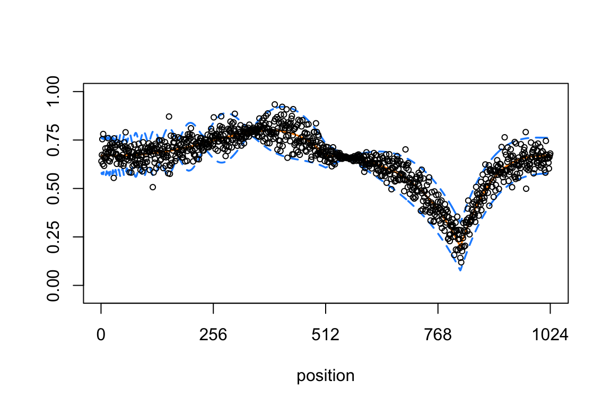

Gaussian mean estimation in simulated data sets
Zhengrong Xing, Peter Carbonetto and Matthew Stephens
Last updated: 2018-12-04
workflowr checks: (Click a bullet for more information)-
✔ R Markdown file: up-to-date
Great! Since the R Markdown file has been committed to the Git repository, you know the exact version of the code that produced these results.
-
✔ Environment: empty
Great job! The global environment was empty. Objects defined in the global environment can affect the analysis in your R Markdown file in unknown ways. For reproduciblity it’s best to always run the code in an empty environment.
-
✔ Seed:
set.seed(1)The command
set.seed(1)was run prior to running the code in the R Markdown file. Setting a seed ensures that any results that rely on randomness, e.g. subsampling or permutations, are reproducible. -
✔ Session information: recorded
Great job! Recording the operating system, R version, and package versions is critical for reproducibility.
-
Great! You are using Git for version control. Tracking code development and connecting the code version to the results is critical for reproducibility. The version displayed above was the version of the Git repository at the time these results were generated.✔ Repository version: eb6cc34
Note that you need to be careful to ensure that all relevant files for the analysis have been committed to Git prior to generating the results (you can usewflow_publishorwflow_git_commit). workflowr only checks the R Markdown file, but you know if there are other scripts or data files that it depends on. Below is the status of the Git repository when the results were generated:
Note that any generated files, e.g. HTML, png, CSS, etc., are not included in this status report because it is ok for generated content to have uncommitted changes.Ignored files: Ignored: dsc/code/Wavelab850/MEXSource/CPAnalysis.mexmac Ignored: dsc/code/Wavelab850/MEXSource/DownDyadHi.mexmac Ignored: dsc/code/Wavelab850/MEXSource/DownDyadLo.mexmac Ignored: dsc/code/Wavelab850/MEXSource/FAIPT.mexmac Ignored: dsc/code/Wavelab850/MEXSource/FCPSynthesis.mexmac Ignored: dsc/code/Wavelab850/MEXSource/FMIPT.mexmac Ignored: dsc/code/Wavelab850/MEXSource/FWPSynthesis.mexmac Ignored: dsc/code/Wavelab850/MEXSource/FWT2_PO.mexmac Ignored: dsc/code/Wavelab850/MEXSource/FWT_PBS.mexmac Ignored: dsc/code/Wavelab850/MEXSource/FWT_PO.mexmac Ignored: dsc/code/Wavelab850/MEXSource/FWT_TI.mexmac Ignored: dsc/code/Wavelab850/MEXSource/IAIPT.mexmac Ignored: dsc/code/Wavelab850/MEXSource/IMIPT.mexmac Ignored: dsc/code/Wavelab850/MEXSource/IWT2_PO.mexmac Ignored: dsc/code/Wavelab850/MEXSource/IWT_PBS.mexmac Ignored: dsc/code/Wavelab850/MEXSource/IWT_PO.mexmac Ignored: dsc/code/Wavelab850/MEXSource/IWT_TI.mexmac Ignored: dsc/code/Wavelab850/MEXSource/LMIRefineSeq.mexmac Ignored: dsc/code/Wavelab850/MEXSource/MedRefineSeq.mexmac Ignored: dsc/code/Wavelab850/MEXSource/UpDyadHi.mexmac Ignored: dsc/code/Wavelab850/MEXSource/UpDyadLo.mexmac Ignored: dsc/code/Wavelab850/MEXSource/WPAnalysis.mexmac Ignored: dsc/code/Wavelab850/MEXSource/dct_ii.mexmac Ignored: dsc/code/Wavelab850/MEXSource/dct_iii.mexmac Ignored: dsc/code/Wavelab850/MEXSource/dct_iv.mexmac Ignored: dsc/code/Wavelab850/MEXSource/dst_ii.mexmac Ignored: dsc/code/Wavelab850/MEXSource/dst_iii.mexmac
Expand here to see past versions:
| File | Version | Author | Date | Message |
|---|---|---|---|---|
| Rmd | eb6cc34 | Peter Carbonetto | 2018-12-04 | wflow_publish(“gaussmeanest.Rmd”) |
| html | 05684ba | Peter Carbonetto | 2018-12-04 | Ran wflow_publish(“gaussmeanest.Rmd”) to populate the webpage. |
| Rmd | 9a67b48 | Peter Carbonetto | 2018-12-02 | Moved dsc results file. |
| Rmd | 049dcbb | Peter Carbonetto | 2018-11-08 | Moved around some files and revised TOC in home page. |
In this analysis, we assess the ability of different signal denoising methods to recover the true signal after being provided with Gaussian-distributed observations of the signal. We consider scenarios in which the data have homoskedastic errors (constant variance) and heteroskedastic errors (non-constant variance).
Since the simulation experiments are computationally intensive, they were implemented separately (see the “dsc” directory in this git repository), and here we only create plots to summarize the results of these experiments.
Set up environment
Load the ggplot2 and cowplot packages, and the functions definining the mean and variances used to simulate the data.
library(ggplot2)
library(cowplot)
source("../code/signals.R")Load results
Load the results of the simulation experiments.
load("../output/dscr.RData")Simulated data with constant variances
This plot reproduces Fig. 2 of the manuscript, which compares the accuracy of the mean curves estimated from the data sets that were simulated using the “Spikes” mean function with constant variance.
First, extract the results used to generate this plot.
homo.data.smash <-
res[res$.id == "sp.3.v1" &
res$method == "smash.s8",]
homo.data.smash.homo <-
res[res$.id == "sp.3.v1" &
res$method == "smash.homo.s8",]
homo.data.tithresh <-
res[res$.id == "sp.3.v1" &
res$method == "tithresh.homo.s8",]
homo.data.ebayes <-
res[res$.id == "sp.3.v1" &
res$method == "ebayesthresh",]
homo.data.smash.true <-
res[res$.id == "sp.3.v1" &
res$method == "smash.true.s8",]
homo.data <-
res[res$.id == "sp.3.v1" &
(res$method == "smash.s8" |
res$method == "ebayesthresh" |
res$method == "tithresh.homo.s8"),]Transform these results into a data frame suitable for ggplot2.
pdat <-
rbind(data.frame(method = "smash",
method.type = "est",
mise = homo.data.smash$mise),
data.frame(method = "smash.homo",
method.type = "homo",
mise = homo.data.smash.homo$mise),
data.frame(method = "tithresh",
method.type = "homo",
mise = homo.data.tithresh$mise),
data.frame(method = "ebayesthresh",
method.type = "homo",
mise = homo.data.ebayes$mise),
data.frame(method = "smash.true",
method.type = "true",
mise = homo.data.smash.true$mise))
pdat <-
transform(pdat,
method = factor(method,
names(sort(tapply(pdat$mise,pdat$method,mean),
decreasing = TRUE))))Create the combined boxplot and violin plot using ggplot2.
p <- ggplot(pdat,aes(x = method,y = mise,fill = method.type)) +
geom_violin(fill = "skyblue",color = "skyblue") +
geom_boxplot(width = 0.15,outlier.shape = NA) +
scale_y_continuous(breaks = seq(6,16,2)) +
scale_fill_manual(values = c("darkorange","dodgerblue","gold"),
guide = FALSE) +
coord_flip() +
labs(x = "",y = "MISE") +
theme(axis.line = element_blank(),
axis.ticks.y = element_blank())
print(p)
Expand here to see past versions of plot-1-create-1.png:
| Version | Author | Date |
|---|---|---|
| 05684ba | Peter Carbonetto | 2018-12-04 |
From this plot, we see that the three variations of SMASH all outperformed EbayesThresh and TI thresholding in this setting.
Next, we compare the same methods in simulated data sets with heteroskedastic errors.
Simulated data with heteroskedastic errors: “Spikes” mean signal and “Clipped Blocks” variance
In this scenario, the data sets were simulated using the “Spikes” mean function and the “Clipped Blocks” variance function. The next two plots reproduce part of Fig. 3 in the manuscript.
This plot shows the mean function as a block line, and the +/- 2 standard deviations as orange lines:
t <- (1:1024)/1024
mu <- spikes.fn(t,"mean")
sigma.ini <- sqrt(cblocks.fn(t,"var"))
sd.fn <- sigma.ini/mean(sigma.ini) * sd(mu)/3
par(cex.axis = 1,cex.lab = 1.25)
plot(mu,type = "l", ylim = c(-0.05,1),xlab = "position",ylab = "",
lwd = 1.75,xaxp = c(0,1024,4),yaxp = c(0,1,4))
lines(mu + 2*sd.fn,col = "darkorange",lty = 5,lwd = 1.75)
lines(mu - 2*sd.fn,col = "darkorange",lty = 5,lwd = 1.75)
Expand here to see past versions of spikes-signal-1.png:
| Version | Author | Date |
|---|---|---|
| 05684ba | Peter Carbonetto | 2018-12-04 |
Extract the results from running the simulations.
hetero.data.smash <-
res[res$.id == "sp.3.v5" & res$method == "smash.s8",]
hetero.data.smash.homo <-
res[res$.id == "sp.3.v5" & res$method == "smash.homo.s8",]
hetero.data.tithresh.homo <-
res[res$.id == "sp.3.v5" & res$method == "tithresh.homo.s8",]
hetero.data.tithresh.rmad <-
res[res$.id == "sp.3.v5" & res$method == "tithresh.rmad.s8",]
hetero.data.tithresh.smash <-
res[res$.id == "sp.3.v5" & res$method == "tithresh.smash.s8",]
hetero.data.tithresh.true <-
res[res$.id == "sp.3.v5" & res$method == "tithresh.true.s8",]
hetero.data.ebayes <-
res[res$.id == "sp.3.v5" & res$method == "ebayesthresh",]
hetero.data.smash.true <-
res[res$.id == "sp.3.v5" & res$method == "smash.true.s8",]Transform these results into a data frame suitable for ggplot2.
pdat <-
rbind(data.frame(method = "smash",
method.type = "est",
mise = hetero.data.smash$mise),
data.frame(method = "smash.homo",
method.type = "homo",
mise = hetero.data.smash.homo$mise),
data.frame(method = "tithresh.rmad",
method.type = "tithresh",
mise = hetero.data.tithresh.rmad$mise),
data.frame(method = "tithresh.smash",
method.type = "tithresh",
mise = hetero.data.tithresh.smash$mise),
data.frame(method = "tithresh.true",
method.type = "tithresh",
mise = hetero.data.tithresh.true$mise),
data.frame(method = "ebayesthresh",
method.type = "homo",
mise = hetero.data.ebayes$mise),
data.frame(method = "smash.true",
method.type = "true",
mise = hetero.data.smash.true$mise))
pdat <-
transform(pdat,
method = factor(method,
names(sort(tapply(pdat$mise,pdat$method,mean),
decreasing = TRUE))))Create the combined boxplot and violin plot using ggplot2.
p <- ggplot(pdat,aes(x = method,y = mise,fill = method.type)) +
geom_violin(fill = "skyblue",color = "skyblue") +
geom_boxplot(width = 0.15,outlier.shape = NA) +
scale_fill_manual(values=c("darkorange","dodgerblue","limegreen","gold"),
guide = FALSE) +
coord_flip() +
scale_y_continuous(breaks = seq(10,70,10)) +
labs(x = "",y = "MISE") +
theme(axis.line = element_blank(),
axis.ticks.y = element_blank())
print(p)Expand here to see past versions of plot-2-create-1.png:
| Version | Author | Date |
|---|---|---|
| 05684ba | Peter Carbonetto | 2018-12-04 |
In this scenario, we see that SMASH, when allowing for heteroskedastic errors, outperforms EbayesThresh and all variants of TI thresholding (including TI thresholding when provided with the true variance). Further, SMASH performs almost as well when estimating the variance compared to when provided with the true variance.
Simulated data with heteroskedastic errors: “Corner” mean signal and “Doppler” variance
In this next scenario, the data sets were simulated using the “Corner” mean function and the “Doppler” variance function. These plots were also used in Fig. 3 of the manuscript.
This plot shows the mean function as a block line, and the +/- 2 standard deviations as orange lines:
mu <- cor.fn(t,"mean")
sigma.ini <- sqrt(doppler.fn(t,"var"))
sd.fn <- sigma.ini/mean(sigma.ini) * sd(mu)/3
plot(mu,type = "l", ylim = c(-0.05,1),xlab = "position",ylab = "",
lwd = 1.75,xaxp = c(0,1024,4),yaxp = c(0,1,4))
lines(mu + 2*sd.fn,col = "darkorange",lty = 5,lwd = 1.75)
lines(mu - 2*sd.fn,col = "darkorange",lty = 5,lwd = 1.75)
Expand here to see past versions of corner-signal-1.png:
| Version | Author | Date |
|---|---|---|
| 05684ba | Peter Carbonetto | 2018-12-04 |
Extract the results from running these simulations.
hetero.data.smash.2 <-
res[res$.id == "cor.3.v3" & res$method == "smash.s8",]
hetero.data.smash.homo.2 <-
res[res$.id == "cor.3.v3" & res$method == "smash.homo.s8",]
hetero.data.tithresh.homo.2 <-
res[res$.id == "cor.3.v3" & res$method == "tithresh.homo.s8",]
hetero.data.tithresh.rmad.2 <-
res[res$.id == "cor.3.v3" & res$method == "tithresh.rmad.s8",]
hetero.data.tithresh.smash.2 <-
res[res$.id == "cor.3.v3" & res$method == "tithresh.smash.s8",]
hetero.data.tithresh.true.2 <-
res[res$.id == "cor.3.v3" & res$method == "tithresh.true.s8",]
hetero.data.ebayes.2 <-
res[res$.id == "cor.3.v3" & res$method == "ebayesthresh",]
hetero.data.smash.true.2 <-
res[res$.id == "cor.3.v3" & res$method == "smash.true.s8",]Transform these results into a data frame suitable for ggplot2.
pdat <-
rbind(data.frame(method = "smash",
method.type = "est",
mise = hetero.data.smash.2$mise),
data.frame(method = "smash.homo",
method.type = "homo",
mise = hetero.data.smash.homo.2$mise),
data.frame(method = "tithresh.rmad",
method.type = "tithresh",
mise = hetero.data.tithresh.rmad.2$mise),
data.frame(method = "tithresh.smash",
method.type = "tithresh",
mise = hetero.data.tithresh.smash.2$mise),
data.frame(method = "tithresh.true",
method.type = "tithresh",
mise = hetero.data.tithresh.true.2$mise),
data.frame(method = "ebayesthresh",
method.type = "homo",
mise = hetero.data.ebayes.2$mise),
data.frame(method = "smash.true",
method.type = "true",
mise = hetero.data.smash.true.2$mise))
pdat <-
transform(pdat,
method = factor(method,
names(sort(tapply(pdat$mise,pdat$method,mean),
decreasing = TRUE))))Create the combined boxplot and violin plot using ggplot2.
p <- ggplot(pdat,aes(x = method,y = mise,fill = method.type)) +
geom_violin(fill = "skyblue",color = "skyblue") +
geom_boxplot(width = 0.15,outlier.shape = NA) +
scale_fill_manual(values=c("darkorange","dodgerblue","limegreen","gold"),
guide = FALSE) +
coord_flip() +
scale_y_continuous(breaks = seq(1,5)) +
labs(x = "",y = "MISE") +
theme(axis.line = element_blank(),
axis.ticks.y = element_blank())
print(p)
Expand here to see past versions of plot-3-create-1.png:
| Version | Author | Date |
|---|---|---|
| 05684ba | Peter Carbonetto | 2018-12-04 |
Similar to the “Spikes” scenario, we see that the SMASH method, when allowing for heteroskedastic variances, outperforms both the TI thresholding and EbayesThresh approaches.
Session information
sessionInfo()
# R version 3.4.3 (2017-11-30)
# Platform: x86_64-apple-darwin15.6.0 (64-bit)
# Running under: macOS High Sierra 10.13.6
#
# Matrix products: default
# BLAS: /Library/Frameworks/R.framework/Versions/3.4/Resources/lib/libRblas.0.dylib
# LAPACK: /Library/Frameworks/R.framework/Versions/3.4/Resources/lib/libRlapack.dylib
#
# locale:
# [1] en_US.UTF-8/en_US.UTF-8/en_US.UTF-8/C/en_US.UTF-8/en_US.UTF-8
#
# attached base packages:
# [1] stats graphics grDevices utils datasets methods base
#
# other attached packages:
# [1] cowplot_0.9.3 ggplot2_3.1.0
#
# loaded via a namespace (and not attached):
# [1] Rcpp_1.0.0 later_0.7.2 dscr_0.1-7
# [4] compiler_3.4.3 pillar_1.2.1 git2r_0.23.0
# [7] plyr_1.8.4 workflowr_1.1.1 bindr_0.1.1
# [10] R.methodsS3_1.7.1 R.utils_2.6.0 tools_3.4.3
# [13] digest_0.6.17 evaluate_0.11 tibble_1.4.2
# [16] gtable_0.2.0 pkgconfig_2.0.2 rlang_0.2.2
# [19] shiny_1.1.0 yaml_2.2.0 bindrcpp_0.2.2
# [22] withr_2.1.2 stringr_1.3.1 dplyr_0.7.6
# [25] knitr_1.20 rprojroot_1.3-2 grid_3.4.3
# [28] tidyselect_0.2.4 glue_1.3.0 R6_2.2.2
# [31] rmarkdown_1.10 purrr_0.2.5 magrittr_1.5
# [34] whisker_0.3-2 promises_1.0.1 backports_1.1.2
# [37] scales_0.5.0 htmltools_0.3.6 assertthat_0.2.0
# [40] xtable_1.8-2 mime_0.5 colorspace_1.4-0
# [43] httpuv_1.4.3 stringi_1.2.4 lazyeval_0.2.1
# [46] munsell_0.4.3 R.oo_1.21.0This reproducible R Markdown analysis was created with workflowr 1.1.1